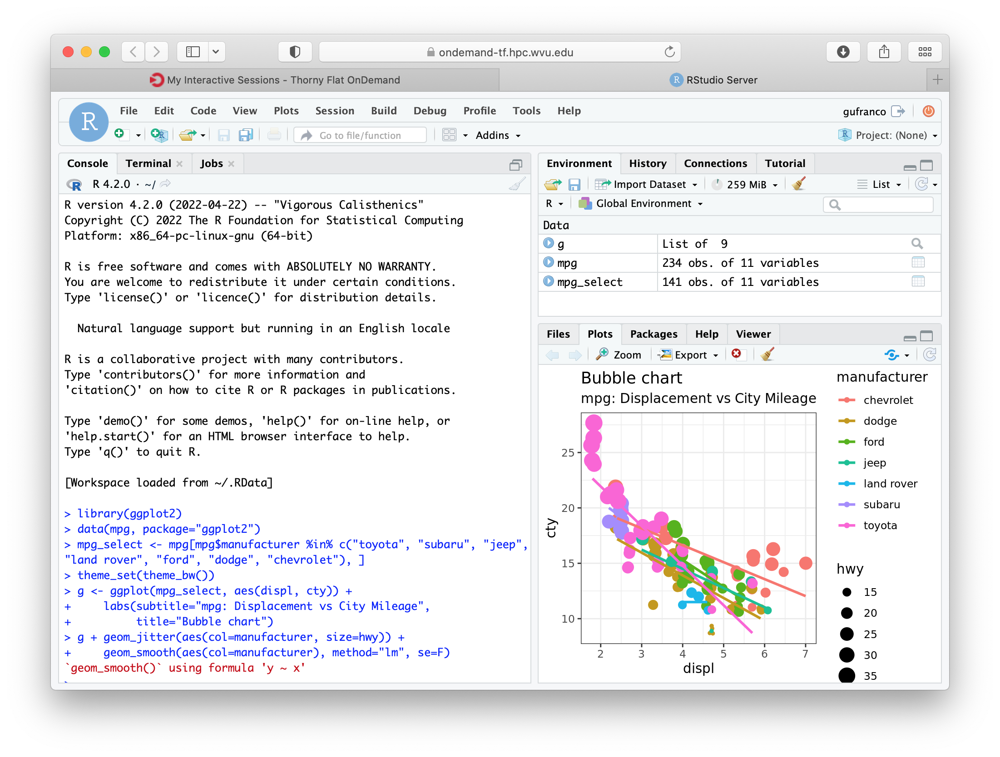
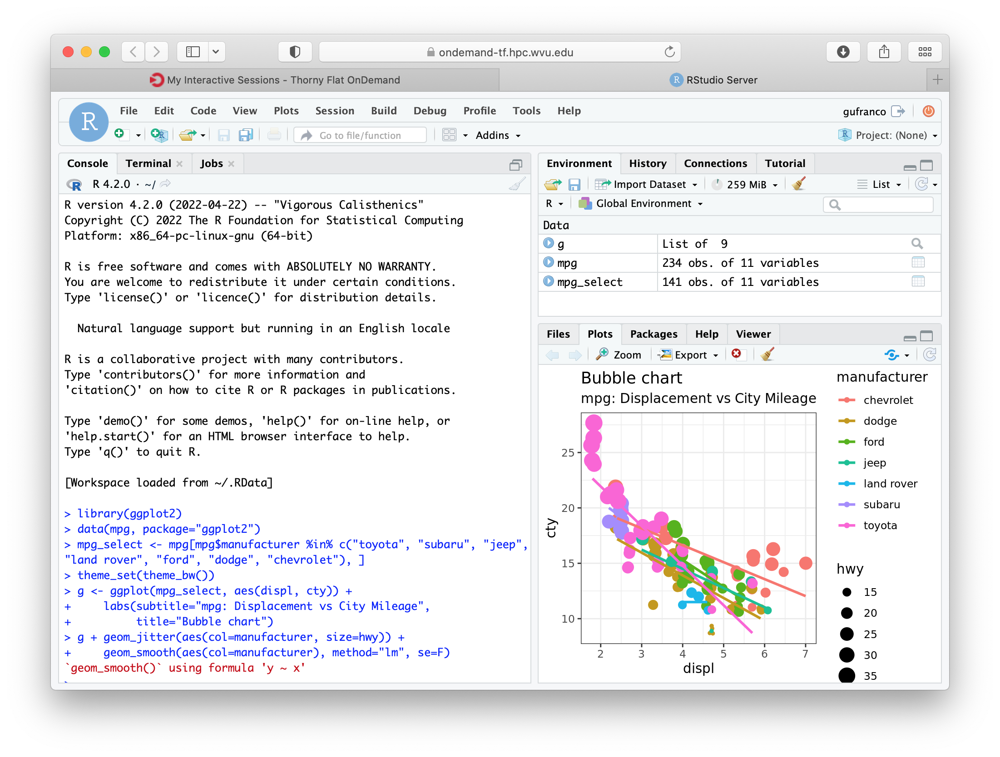

R Language¶
R is a language and environment for scientific computing with a particular emphasis on statistical analysis and plotting. The R project is supported by the R Foundation and it is released with a GNU license. The R language itself was created to be similar to the S language and environment which was developed at Bell Laboratories (formerly AT&T, now Lucent Technologies) by John Chambers and colleagues. Originally, R was considered as a different implementation of S, it has since grown into a major environment for statistical computing. There are some important differences with the original S language, but much code written for S runs unaltered under R.
The R source code is written primarily in C and Fortran, with some higher-level pieces of code in R itself. R provides a wide variety of statistical (linear and nonlinear modeling, classical statistical tests, time-series analysis, classification, clustering, and others), it is capable of publication-ready graphics and is highly extensible. The R language is often the vehicle of choice for research in statistical methodology, and R provides an open source alternative for practitioners of statistical tools and academic research in the area.
R is particularly powerful several reasons, one is the large collection of packages that have been created for R, literally thousands of packages all available in the the Comprehensive R Archive Network (CRAN). Another strength is the ease with which well-designed publication-quality plots can be produced, including mathematical symbols and formulae where needed. Great care has been taken over the defaults for the minor design choices in graphics, but the user retains full control.
Although R has a command-line interface, there are several third-party graphical user interfaces (GUIs). One is RStudio, an integrated development environment (IDE), another being Jupyter, with notebook interface. We will show here how you can access all those GUI interfaces. But before using GUIs it is important first focus on the basic command line interface (CLI).
Accessing the R interpreter¶
The R interpreter is the basic software that allows you to interact with R.
From the user point of view, there are two commands in R. The command R that opens the command-line-based interactive interface, and Rscript which is a command used to create scripts that run as commands by themselves.
There are three ways of accessing the R commands on our clusters. Using the R version installed by default from the OS repositories. Using an environment module or using a singularity container that provides R inside. We will explore those options in the contexts of our two clusters, Spruce Knob and Thorny Flat.
Spruce Knob¶
On Spruce Knob, R is preinstalled from RHEL repositories. The RHEL version is 3.0.2 and it is considered too old for most scientific applications. You should not have much reason to use that version in research.
In terms of environment modules Spruce Knob offers two versions:
lang/R/3.6.3_gcc101
lang/R/4.0.4_gcc101
You can load any of those modules with the module command:
module load lang/R/4.0.4_gcc101
After that, the command R and Rscript became available on the shell.
The third way of accessing the R interpreter is via a Singularity container.
First, you need to load the singularity environment module:
module load singularity
There are two images that include the R interpreter inside:
RStudio-desktop-1.2.5042_R-3.4.4.sif
RStudio-server-1.2.5042_R-3.6.2.sif
Despite including extra software such as RStudio they can be used as R interpreters, especially if you are interested in older versions of R such as 3.4.4. To access the R interpreter you can get a shell inside the image with:
singularity shell $SNG_PATH/RStudio-server-1.2.5042_R-3.6.2.sif
Thorny Flat¶
On Thorny Flat the R interpreter is not preinstalled from RHEL packages and the only two options are to use the environment modules or using a singularity image. The environment modules for R available on Thorny are:
lang/r/3.6.3_gcc102
lang/r/4.0.4_gcc102
To load the module, use the command module:
module load lang/r/4.0.4_gcc102
After that, the command R and Rscript became available on the shell.
Another option for accessing the R interpreter is via a singularity container.
Several images include the R interpreter, in particular, the two images below offer an alternative to equivalent versions from environment modules:
R-3.6.3.sif
R-4.0.4.sif
To get a shell prompt inside any of those images load the singularity module first:
module load singularity
After that, a shell inside the image can be obtained with:
singularity shell $SNG_PATH3/R-3.6.3.sif
or:
singularity shell $SNG_PATH3/R-4.0.4.sif
After getting a shell inside the container the commands R and Rscript became available.
A shortcut to access the R interpreter in one single step is with the run option, for example:
singularity run $SNG_PATH3/R-4.0.4.sif
Using R from the Terminal¶
Regardless of how you access R, the R package includes two executables, R and Rscript. The command R is used to start a text-based interactive session, on the terminal execute the command R.
{kind=link}
From there you can start typing R commands and getting output interactively:
> 2 + 2
[1] 4
Another way of working in R, and more suited for HPC environments are using R scripts.
To do so, first, write your script in a file. It is customary to add the .R extension to the file. Consider for example a very minimal script, lets create a file hello.R with the content below:
#!/usr/bin/env Rscript
sayHello <- function(){
print('hello')
}
sayHello()
The first line of the file must be #!/usr/bin/env Rscript. This line instructs the shell that this is an R script, meaning that all commands below the first line must be processed by the R internal interpreter.
To make this script like any other executable, we need to change permissions to the file:
$> chmod +x hello.R
The script is ready for execution. As this is such a small program you can run it directly on the head node:
$> ./hello.R
[1] "hello"
However, for large executions, you should always create a submission script and never run numerical intensive operations on the head node. Create a file “runjob.pbs” with this content:
#!/bin/bash
#PBS -N MY_R_SCRIPT
#PBS -q standby
#PBS -j oe
#PBS -l nodes=1:ppn=1
cd $PBS_O_WORKDIR
module purge
module load lang/r/4.0.4_gcc102
./hello.R
The name of the job is declared with #PBS -N MY_R_SCRIPT. The queue is declared with #PBS -q standby, for executions that run in less than 4 hours standby is the preferable choice. The line #PBS -j oe joins the error with the output in a single file. The line #PBS -l nodes=1:ppn=1 is asking to run on a single node and using a single core for the execution. In most cases, R runs serially but we will discuss some parallel executions below.
The line cd $PBS_O_WORKDIR``changes the directory to the place where the command ``qsub was executed.
The line module purge``cleans the environment of any modules and ``module load lang/r/4.0.4_gcc102 will load the module for executing R. The name of the module is for Thorny Flat, on Spruce you need to use the modules mentioned above for that cluster.
Finally ./hello.R executes the script and the output will be written in a file like MY_R_SCRIPT.o<JobID> where JobID is a number that identifies the job in the queue system.
The contents of the file are shown below:
$ cat MY_R_SCRIPT.o4714619
[1] "hello"
Installing R Packages as a normal user¶
The system-wide location for installed packages is not writable for normal users. That does not prevent you from installing packages for your usage. Packages installed as a user will be installed at $HOME/R/x86_64-pc-linux-gnu-library/<R_VERSION> and will be accessible to you as any system-wide package.
For the versions that we currently have on our clusters, <R_VERSION> could be 3.6 or 4.0.
Packages can only be installed from the head node both on Thorny and Spruce. Compute nodes do not have internet access, so they are not capable to access CRAN from the internet to download any package.
There are two main ways to install R packages from CRAN. You can install packages from inside the interactive R interpreter. Execute the command R and from there install the package with:
install.packages('<Package Name>', repos="https://cran.rstudio.com")
Another alternative is using the command Rscript, this time from the normal shell:
$> Rscript -e 'install.packages('<Package Name>', repos="https://cran.rstudio.com")'
With those commands, you will automatically download the package from CRAN and eventually all dependencies needed for that package. The declaration repos="https://cran.rstudio.com" is optional. Now declaring a URL for downloads and you will get a list of known mirrors where you can download the package.
With any of those methods, R will automatically detect that you do not have permission to write in the system-wide R library folder and will prompt if you would like to install in a local directory from within your home directory. This folder will also be checked automatically when you run R for packages, allowing you to use anything you already installed.
For example, lets assume that you want to install the package dplyr:
> install.packages("dplyr")
Installing package into ‘/gpfs/home/<username>/R/x86_64-pc-linux-gnu-library/3.6’
(as ‘lib’ is unspecified)
--- Please select a CRAN mirror for use in this session ---
Secure CRAN mirrors
1: 0-Cloud [https] 2: Algeria [https]
...
...
57: USA (CA 1) [https] 58: USA (IA) [https]
59: USA (KS) [https] 60: USA (MI 1) [https]
61: USA (MI 2) [https] 62: USA (OR) [https]
63: USA (TN) [https] 64: USA (TX 1) [https]
65: Uruguay [https] 66: (other mirrors)
Selection: 63
also installing the dependencies ‘backports’, ‘ellipsis’, ‘digest’, ‘zeallot’, ‘utf8’, ‘vctrs’, ‘cli’, ‘crayon’, ‘fansi’, ‘pillar’, ‘purrr’, ‘assertthat’, ‘glue’, ‘magrittr’, ‘pkgconfig’, ‘R6’, ‘Rcpp’, ‘rlang’, ‘tibble’, ‘tidyselect’, ‘BH’, ‘plogr’
After some downloads and compilations the code will be installed on your local folder $HOME/R/x86_64-pc-linux-gnu-library/3.6
Installing R Packages in non-default directories¶
To use locally installed packages, before you execute R you just need to
modify the R_LIBS environment variable to tell R where to search for
local packages:
export R_LIBS=<dir>
Using install.packages()¶
To use install.packages from the R prompt, before you start R you need to modify the R_LIBS environment variable:
export R_LIBS=<dir>
Then inside the R prompt, you execute any of the procedures above such as install.packages() inside the R interactive shell.
Manual installation with R CMD INSTALL¶
There is a very manual way of installing packages in R using the command
R CMD INSTALL.
There are several restrictions to use this command:
First, this option only works if you have already downloaded a copy of the package from CRAN, any of its mirrors, or an external site that provides a tar package.
Second, as a normal user, you must specify the path with the -l flag, otherwise, the command will refuse to work as you have no write access to the system-wide location. The command must be used like this:
R CMD INSTALL -l <dir> <package_name>
The folder <dir> is the location where the package will be installed and the folder must be created in advance. <package_name> is the name of the package and you must ensure that all dependencies are already installed for the package, meaning that you will have to install several other packages before you can install the package that you want.
Consider for example installing the package parallelly, this package has no dependencies beyond those that already came with the R installation. The sources are available on CRAN and can be downloaded from one of its many mirrors. You can first download the package with:
wget https://cran.r-project.org/src/contrib/parallelly_1.24.0.tar.gz
Once the package is downloaded, ensure that the folder where you want to install the software exists, for example, if you want to install packages at
~/R/local_packages, create the folder with:
mkdir -p ~/R/local_packages
Finally, install the packages with:
R CMD INSTALL -l ~/R/local_packages parallelly_1.24.0.tar.gz
The package is now installed but it can only become visible if you set up the R_LIBS environment for it:
export R_LIBS=~/R/local_packages
Finally load the package with:
> library("parallelly")
You need to be careful not to mix R packages created with different major versions of R, those are usually incompatible if you create the package with one version and try to use it with a different version. That is the reason why more automatic installers create separate folders for different R versions.
Graphical Interfaces: RStudio and Jupyter¶
RStudio is a GUI application that allows you to interact with R from a window environment on your computer and a web interface on an HPC cluster. We will demonstrate how to access RStudio on the cluster.
We offer access to RStudio via Open On-Demand. Open On-Demand is web service that offers interactive access to the the cluster from a web interface. A job is created transparently to the user and a RStudio can run from a compute node for a certain amount of time.
The first step is to open a web browser on your local computer and go to https://ondemant-tf.hpc.wvu.edu
{kind=link}

 

{kind=link}